代码风格好不好就像字写得好不好看一样，如果一个公司招聘秘书，肯定不要字写得难看的。同理，代码风格糟糕的程序员肯定也是不称职的。虽然编译器不会挑剔难看的代码，照样能编译通过，但是和你一个Team的其他程序员肯定受不了，你自己也受不了，写完代码几天之后再来看，自己都不知道自己写的是什么。参考文献[12]的第一版前言里有句话说得好：“Thus, programs must be written for people to read, and only incidentally for machines to execute.”代码主要是为了写给人看的，而不是写给机器看的，只是顺便也能用机器执行而已，如果是为了写给机器看那直接写机器指令就好了，没必要用高级语言了。代码和语言文字一样是为了表达思想、记载信息，所以一定要写得清楚整洁才能有效地表达。正因为如此，在一个软件项目中，代码风格一般都用文档规定死了，所有参与项目的人不管他自己原来是什么风格，都要遵守统一的风格，例如Linux内核的参考文献[14]就是这样一个文档。本章我们以内核的代码风格为基础来讲解好的编码风格都有哪些规定，这些规定的Rationale是什么。我只是以Linux内核为例来讲解编码风格的概念，并没有说内核编码风格就一定是最好的编码风格，但Linux内核项目如此成功，就足以说明它的编码风格是最好的C语言编码风格之一了。
我们知道C语言的语法对缩进和空白没有要求，空格、Tab、换行都可以随意写，实现同样功能的代码可以写得很好看，也可以写得很难看。例如上一章例8.5的代码如果写成这样就很难看了：
例9.1 缺少缩进和空白的代码
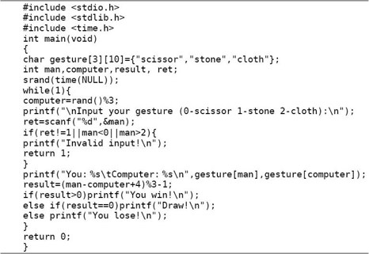
一是缺少空白字符，代码密度太大，看着很费劲。二是没有缩进，看不出来哪个{和哪个}配对，像这么短的代码还能凑合着看，如果代码超过一屏就完全没法看了。参考文献[14]中关于空白字符并没有特别规定，因为基本上所有的C代码风格对于空白字符的规定都差不多，主要有以下几条。
1．关键字if、while、for与其后的控制表达式的(括号之间插入一个空格分隔，但括号内的表达式应紧贴括号。例如：
2．双目运算符的两侧各插入一个空格分隔，单目运算符和操作数之间不加空格，例如i␣=␣i␣+␣1、++i、!(i␣<␣1)、-x、&a[1]等。
3．后缀运算符和操作数之间也不加空格，例如取结构体成员s.a、函数调用foo(arg1)、取数组成员a[i]。
4．,号和;号之后要加空格，这是英文的书写习惯，例如for␣(i␣=␣1;␣i␣<␣10;␣i++)、foo(arg1,␣arg2)。
5．以上关于加空格的规则并没有严格要求，有时为了突出优先级也可以写得更紧凑一些，例如for␣(i=1;␣i<10;␣i++)、distance␣=␣sqrt(x*x␣+␣y*y)等。但是省略的空格一定不要误导了读代码的人，例如a||b␣&&␣c很容易让人理解成错误的优先级。
6．由于UNIX系统标准的字符终端是24行80列的，接近或大于80个字符的较长语句或声明要折行写，折行后用空格和上面的表达式或参数对齐，例如：
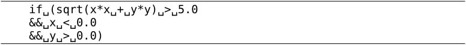
再比如：
7．较长的字符串可以断成多个字符串然后分行书写，例如：
C编译器会自动把相邻的多个字符串接在一起，以上两个字符串相当于一个字符串"This is such a long sentence that it cannot be held within a line\n"。注意这个语法有时候会带来一点麻烦，比如下面这段代码在语法上没有问题，但在语义上有问题，你能看出是什么问题吗？
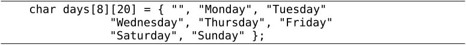
8．有的人喜欢在变量定义中使用Tab字符，使变量名对齐，这样看起来很美观。

内核代码风格关于缩进的规则有以下几条。
1．要用缩进体现出语句块的层次关系，使用Tab字符缩进，不能用空格代替Tab。在标准的字符终端上一个Tab看起来是8个空格的宽度，如果你的文本编辑器可以设置Tab的显示宽度是几个空格，建议也设成8，这样大的缩进使代码看起来非常清晰。如果有的行用空格做缩进，有的行用Tab做缩进，甚至空格和Tab混用，那么一旦改变了文本编辑器的Tab显示宽度就会看起来非常混乱，所以内核代码风格规定只能用Tab做缩进，不能用空格代替Tab。
2．if/else、while、do/while、for、switch这些可以带语句块的语句，语句块的{或}应该和关键字写在同一行，用空格隔开，而不是单独占一行。这个规定和参考文献[3]的代码风格一致，好处是不必占太多行，使得一屏能显示更多代码。例如应该这样写：
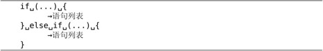
但很多人还是习惯这样写：
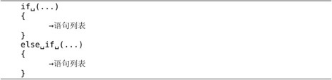
这两种写法用得都很广泛，只要在同一个项目中能保持统一就可以了。
3．函数定义的{和}单独占一行，这一点和语句块的规定不同，例如：
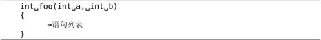
4．switch和语句块里的case、default对齐写，也就是说语句块里的case、default标号相对于switch不往里缩进，但标号下的语句要往里缩进。例如：
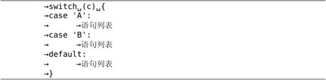
用于goto语句的自定义标号应该顶头写不缩进，而不管标号下的语句缩进到第几层。
5．代码中每个逻辑段落之间应该用一个空行分隔开。例如每个函数定义之间应该插入一个空行，头文件、全局变量定义和函数定义之间也应该插入空行，例如：
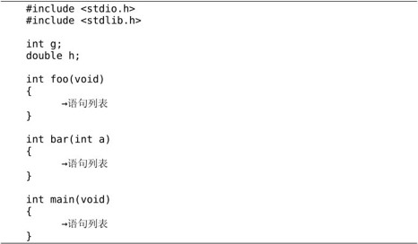
6．如果一个函数的语句列表很长，可以根据相关性分成若干组，用空行分隔，通常把变量定义组成一组，后面加空行，return语句之前加空行，例如：
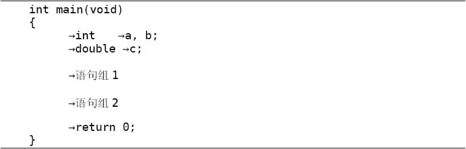
单行注释应采用/*␣comment␣*/的形式，用空格把界定符和文字分开。多行注释最常见的是这种形式：
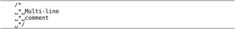
也有更花哨的形式：
使用注释的场合主要有以下几种。
1．整个源文件的顶部注释。说明此模块的相关信息，例如文件名、作者和版本历史等，顶头写不缩进。例如内核源代码目录下的kernel/sched.c文件的开头：
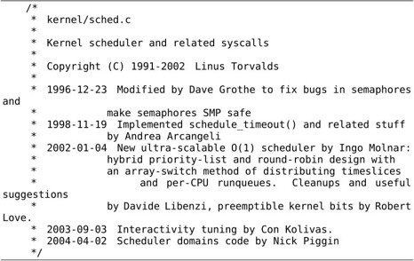
2．函数注释。说明此函数的功能、参数、返回值、错误码等，写在函数定义上侧，和此函数定义之间不留空行，顶头写不缩进。
3．相对独立的语句组注释。对这一组语句做特别说明，写在语句组上侧，和此语句组之间不留空行，与当前语句组的缩进一致。
4．代码行右侧的简短注释。对当前代码行做特别说明，一般为单行注释，和代码之间至少用一个空格隔开，一个源文件中所有的右侧注释最好能上下对齐。尽管例2.1讲过注释可以穿插在一行代码中间，但不建议这么写。内核源代码目录下的lib/radix-tree.c文件中的一个函数包含了上述三种注释：
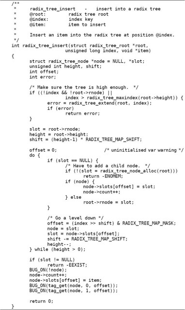
参考文献[14]中特别指出，函数内的注释要尽可能少用。写注释主要是为了说明你的代码“能做什么”（比如函数接口定义），而不是为了说明“怎样做”，只要代码写得足够清晰，“怎样做”是一目了然的，如果你需要用注释才能解释清楚，那就表示你的代码可读性很差，除非是特别需要提醒注意的地方才使用函数内注释。
5．复杂的结构体定义比函数更需要注释。例如内核源代码目录下的kernel/sched.c文件中定义了这样一个结构体：
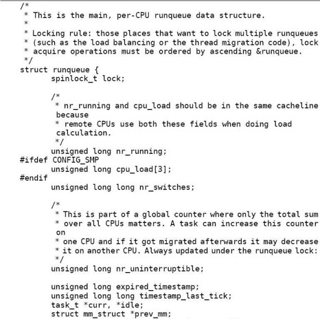
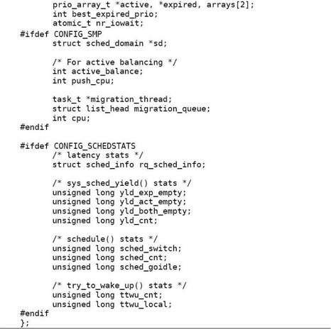
6．复杂的宏定义和变量声明也需要注释。例如内核源代码目录下的include/linux/ jiffies.h文件中的定义：
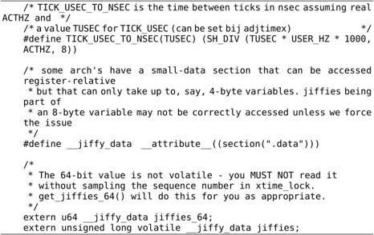
标识符命名应遵循以下原则：
1．标识符命名要清晰明了，可以使用完整的单词和易于理解的缩写。短的单词可以通过去元音形成缩写，较长的单词可以取单词的头几个字母形成缩写。看别人的代码看多了就可以总结出一些缩写惯例，例如count写成cnt，block写成blk，length写成len，window写成win，message写成msg，number写成nr，temporary可以写成temp，也可以进一步写成tmp，最有意思的是internationalization写成i18n，词根trans经常缩写成x，例如transmit写成xmt。我就不多举例了，请读者在看代码时自己注意总结和积累。
2．内核编码风格规定变量、函数和类型采用全小写加下划线的方式命名，常量（比如宏定义和枚举常量）采用全大写加下划线的方式命名，比如上一节举例的函数名radix_tree_insert、类型名struct radix_tree_root、常量名RADIX_TREE_MAP_SHIFT等。
微软发明了一种变量命名法叫匈牙利命名法（Hungarian Notation），在变量名中用前缀表示类型，例如iCnt（i表示int）、pMsg（p表示pointer）、lpszText（lpsz表示long pointer to a null-terminated string）等。Linus在参考文献[14]中毫不客气地讽刺了这种写法：“Encoding the type of a function into the name (so-called Hungarian notation) is brain damaged - the compiler knows the types anyway and can check those, and it only confuses the programmer. No wonder MicroSoft makes buggy programs.”代码风格本来就是一个很有争议的问题，如果你接受本章介绍的内核编码风格（也是本书所有范例代码的风格），就不要使用大小写混合的变量命名方式㉓，更不要使用匈牙利命名法。
3．全局变量和全局函数的命名一定要详细，不惜多用几个单词多写几个下划线，例如函数名radix_tree_insert，因为它们在整个项目的许多源文件中都会用到，必须让使用者明确这个变量或函数是干什么用的。局部变量和只在一个源文件中调用的内部函数的命名可以简略一些，但不能太短。尽量不要使用单个字母做变量名，只有一个例外：用i、j、k做循环变量是可以的。
4．针对中国程序员的一条特别规定：禁止用汉语拼音做标识符，可读性极差。
每个函数都应该设计得尽可能简单，简单的函数才容易维护。设计函数应遵循以下原则：
1．实现一个函数只是为了做好一件事情，不要把函数设计成用途广泛、面面俱到的，这样的函数肯定会超长，而且往往不可重用，维护困难。
2．函数内部的缩进层次不宜过多，一般以少于4层为宜。如果缩进层次太多就说明设计得太复杂了，应考虑分割成更小的函数（Helper Function）来调用。
3．函数不要写得太长，建议在24行的标准终端上不超过两屏，太长会造成阅读困难，如果一个函数超过两屏就应该考虑分割函数了。参考文献[14]中特别说明，如果一个函数在概念上是简单的，只是长度很长，这倒没关系。例如函数由一个大的switch组成，其中有非常多的case，这是可以的，因为各case分支互不影响，整个函数的复杂度只等于其中一个case的复杂度，这种情况很常见，例如TCP的状态机实现。
4．执行函数就是执行一个动作，函数名通常应包含动词，例如get_current、radix_tree_insert。
5．比较重要的函数定义上方必须加注释，说明此函数的功能、参数、返回值、错误码等。
6．另一种度量函数复杂度的办法是看有多少个局部变量，5到10个局部变量已经很多了，再多就很难维护了，应该考虑分割成多个函数。
indent工具可以把代码格式化成某种风格，例如把例9.1格式化成内核编码风格：
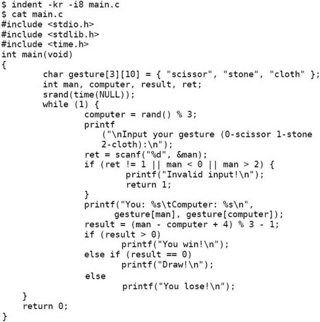
-kr选项表示K&R风格，-i8表示缩进8个空格的长度。如果没有指定-nut选项，则每8个缩进空格会自动用一个Tab代替。注意indent命令会直接修改原文件，而不是打印到屏幕上或者输出到另一个文件，这一点和很多UNIX命令不同。可以看出，-kr -i8两个选项格式化出来的代码已经很符合本章介绍的代码风格了，添加了必要的缩进和空白，较长的代码行也会自动折行。美中不足的是没有添加适当的空行，因为indent工具也不知道哪几行代码在逻辑上是一组的，空行还是要自己动手添，当然原有的空行肯定不会被indent删去的。
如果你采纳本章介绍的内核编码风格，基本上-kr -i8这两个参数就够用了。indent工具也有支持其他编码风格的选项，具体请参考Man Page。有时候indent工具的确非常有用，比如某个项目中途决定改变编码风格（这很少见），或者往某个项目中添加的几个代码文件来自另一个编码风格不同的项目，但绝不能因为有了indent工具就肆无忌惮，一开始把代码写得乱七八糟，最后再依靠indent去清理。